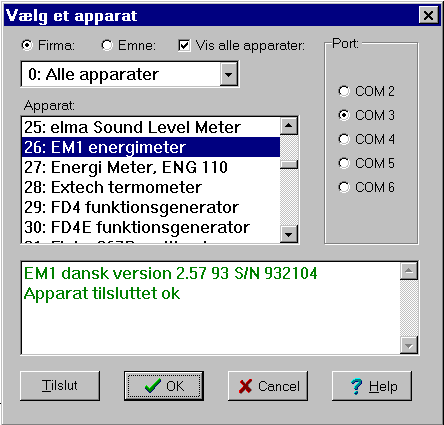
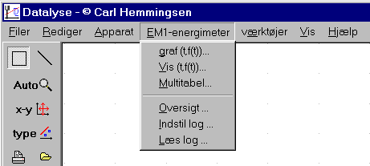
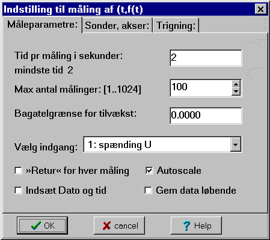
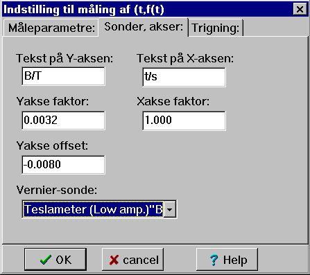
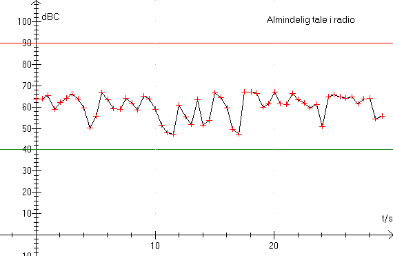

Der er over 100 apparater. De kan inddeles efter Firma eller efter Emne. Firma 0 (Emne 0) giver en liste over samtlige apparater i alfabetisk rækkefølge. I Datalyse.ini sætter man de apparater OFF, som man ikke ønsker vist normalt. Afmærkes feltet þ Vis alle apparatet, kan man alligevel vælge blandt samtlige apparatet. Datalyse viser alle ledige com-porte. Denne pc har et ekstra kort med 4 com-porte, der deler et IRQ.
Her er valgt Firma og alle apparater og herunder EM1 energimeter.

Bemærk, at Datalyse tester forbindelsen til apparatet. Der er forbindelse, for apparatet har sendt: »EM1 dansk version 2.57 93 S/N 932104« til pc'en. Den grønne farve symbolerer ok, (en rød farve symbolerer manglende forbindelse).
Tast ok. (Du kan også dobbeltklikke på apparatet - den blå tekst i menuen Apparat:). Herunder vises den indsatte menu for IMPOs energimeter.

Apparatets menu er nu indsat i hovedmenuen i Datalyse og dataopsamlingen kan begynde.
Vi vælger grafisk måling: graf (t, f(t))

Måleparametre:
Menuen indeholder 3 faneblade. Blad 1 Måleparametre indeholder en række valg. De simpleste er tid pr måling og antal målinger. Vi vælger spændingsmåling, menupunktet afhænger af apparatet. Bagatelgrænsen benyttes, hvis man vil måle over lang tid, men kun ønsker en måling, når der er sket en ændring. Måles fx på et køleskabs effekt, og sættes bagatelgrænsen til 2 (watt), vil man udgå målinger, når køleskabet er slukket, men så snart motoren går i gang, vil man få målinger.
Sættes þ ved »Retur« for hver måling, skal du trykke på en tast for hver måling. Hvis ikke foretages målingerne løbende.
þ ved Autoscale betyder, at Datalyse automatisk tilpasser koordinatsystemet. Fx skaleres Yaksen til 0-250 Volt ved spændingsmåling, men fra 0-3 Ampere ved strømmåling. Det anbefales at sætte þ ved første måling. Gentages målingen, kan man bevare indstillingen ved at fjerne krydset.
þ ved Indsæt dato og tid indsætter YY-MM-DD og hh:mm:ss i de to første søjler i tabellen. Man kan så altid se, hvornår hver enkelt måling er foretaget.
þ ved Gem data løbende vil sikre, at data gemmes løbende. Skulle pc'en gå død, vil data indtil dødstidspunktet være gemt. Datalyse beder om et filnavn.
Sonder og Akser:

Skalering af Xaksen bruges typisk ved pH-målinger, idet man så kan skrive V/mL og vælge en faktor til antal mL/s.
Skalering af Yaksen bruges f.eks. i forbindelse med Vernier-sonder. Der findes mange forskellige sonder. Menuen viser et Teslameter. Sonden giver en spænding fra 0 - 5 volt, så den kan benyttes i forbindelse med et multimeter. Man kan selv indsætte sonder i filen »vernier.ini«. Hvordan det gøres, er forklaret i selve filen.
Trigning:
Trigning benyttes til at starte målingerne på et bestemt tidspunkt eller når den målte værdi overstiger en bestemt grænse…
Vis (t, f(t))
I Vis måling vælges tid pr måling og antal målinger. Men dataopsamlingen stopper ikke før brugeren klikker på knappen »Stop«. Vis måling kan vælges for næsten alle apparater, hvor man kan vælge »Mål (t, f(t))«.
Sættes kryds i »Start forfra«, slettes grafen, når der er opsamlet det valgte antal målinger og der startes forfra.
Sættes ikke kryds, scrolles målingerne til venstre, når det valgte antal målinger er opsamlet.
Vis måling er velegnet til iagttagelse af variationer, fx ved måling af lydstyrke eller temperatur.
Husk, at bruge adapter til apparater med batterier ved langtidsmålinger.
